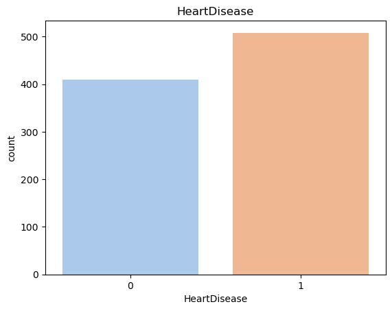
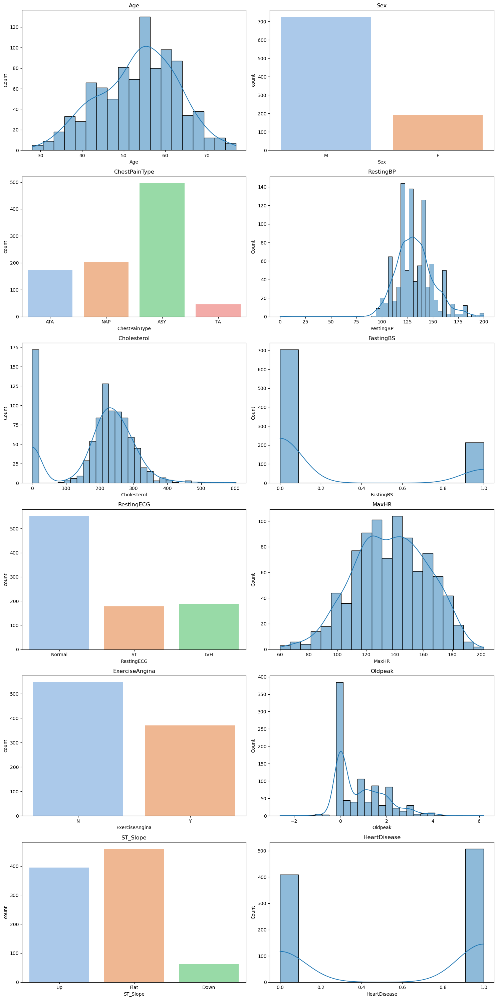
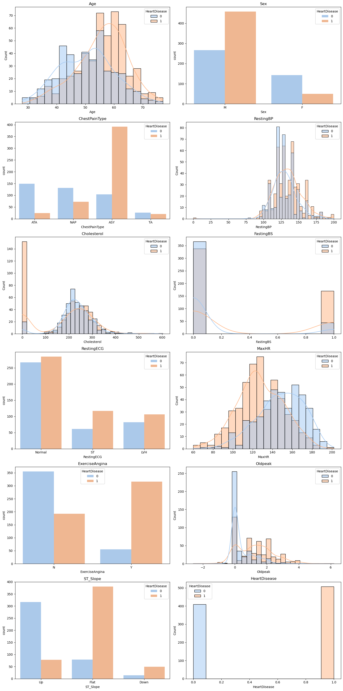
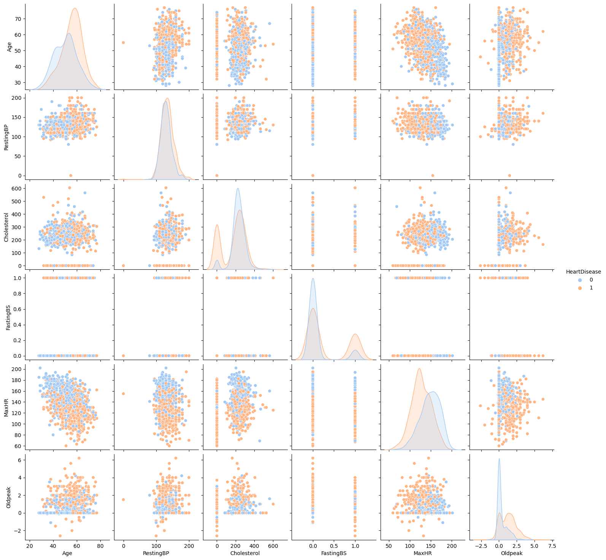
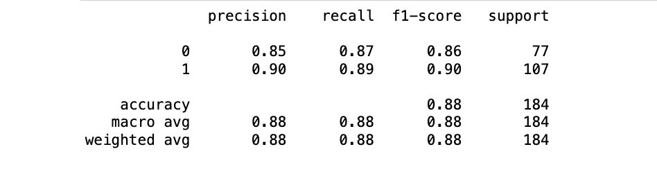
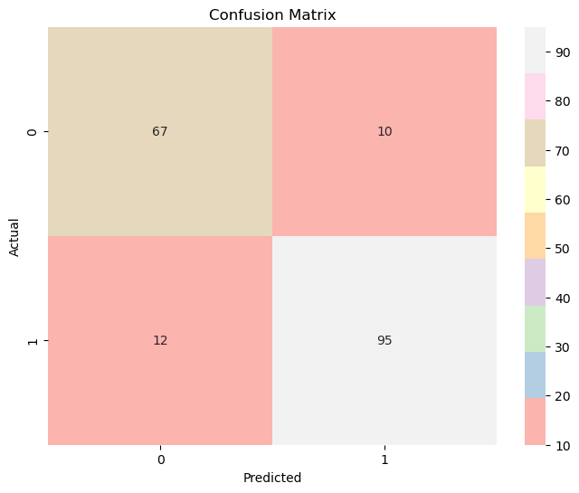

Figure 1: Distribution of Heart Disease Risk
Project 2: Classification
Introduction
Cardiovascular diseases (CVDs) are the number 1 cause of death globally, taking an estimated 17.9 million lives each year, which accounts for 31% of all deaths worldwide. Four out of 5CVD deaths are due to heart attacks and strokes, and one-third of these deaths occur prematurely in people under 70 years of age. Heart failure is a common event caused by CVDs and this dataset contains 11 features that can be used to predict a possible heart disease. People with cardiovascular disease or who are at high cardiovascular risk (due to the presence of one or more risk factors such as hypertension, diabetes, hyperlipidaemia or already established disease) need early detection and management wherein a machine learning model can be of great help. Through this analysis, we will implement a model that will allow us to predict who is at risk of heart disease based off of their heart features.
For this analysis, I will be using the "Heart Failure Prediction" dataset from Kaggle, which is a combination of several other independent datasets. The dataset features 11 common heart disease predicters for 918 observations as well as a heart disease attribute. Seven of the attributes are categorical:
- Age: age of the patient [years]
- Sex: sex of the patient [M: Male, F: Female]
- ChestPainType: chest pain type [TA: Typical Angina, ATA: Atypical Angina, NAP: Non-Anginal Pain, ASY: Asymptomatic]
- RestingBP: resting blood pressure [mm Hg]
- Cholesterol: serum cholesterol [mm/dl]
- FastingBS: fasting blood sugar [1: if FastingBS > 120 mg/dl, 0: otherwise]
- RestingECG: resting electrocardiogram results [Normal: Normal, ST: having ST-T wave abnormality (T wave inversions and/or ST elevation or depression of > 0.05 mV), LVH: showing probable or definite left ventricular hypertrophy by Estes' criteria]
- MaxHR: maximum heart rate achieved [Numeric value between 60 and 202]
- ExerciseAngina: exercise-induced angina [Y: Yes, N: No]
- Oldpeak: oldpeak = ST [Numeric value measured in depression]
- ST_Slope: the slope of the peak exercise ST segment [Up: upsloping, Flat: flat, Down: downsloping]
- HeartDisease: output class [1: heart disease, 0: Normal]
Pre-processing
To prepare the dataset for processing, we'll first make sure it has no null or duplicated values. While KNN is sensitive to outliers, we will still refrain from removing any outliers for the numerical attributes. Outliers in this context represent the serious health conditions that could decide whether or not a person is at risk of heart disease.
Later on, we will use a LabelEncoder to change the categorical values into numerical values so that we can use a predictor model.
Data Understanding & Visualization
We'll start off by ensuring our dataset is balanced so our model doesn't train on a biased dataset. Using seaborn's countplot, we can plot the distribution of the heart disease attribute, which will be our response variable.

The plot shows that the dataset is fairly balanced with 508 people having a risk of heart disease and 410 people not having a risk of heart disease. Let's compare this distribution to the rest of the variables' distributions by creating subplots. We'll use histograms for numeric variables and bar plots for categorical variables, ensuring all variables are visualized appropriately.

Figure 2: Distribution of Heart Features
We can see that the other attributes' distributions aren't balanced, which is to be expected. As long as our response variable is balanced then we are safe to proceed. Notice that our cholesterol distribution shows a high frequency for cholesterol levels under 50. While it may look like an outlier, it is actually a sign of serious health complications such as heart disease.
Let's overlay the heart disease attribute on top of the distribution subplots to get an understanding of which health indicators may cause heart disease.

Figure 3: Distribution of Heart Disease Risk for Each Heart Feature
For most of these plots, we can tell that there is a clear divide between which health conditions correlate with heart disease and which do not. For example, there is a higher risk of heart disease for individuals with lower maximum heart rates than individuals with higher maximum heart rates. This means it will be fairly easy to predict heart failure based on heart features.
We can further use a pairplot to create scatter subplots to visualize the distribution of heart disease in relation to co-occurring health conditions.

Figure 4: Distribution of Heart Disease Risk in Relation to Co-occurring Heart Features
For example, we can see that there is more risk of heart disease as maximum heart rate drops. We can also tell that younger individuals tend to have higher maximum heart rates than older individuals. So, we can deduce that older individuals are more likely to get heart disease because their maximum heart rate is low.
Our pairplot also shows us that outliers, regardless of heart feature, usually signify heart disease.
Modeling
Since we have outliers in our dataset that we don't want to get rid of, we will avoid using KNN and Naive Bayes, both which are sensitive to outliers. Random Forests, on the other hand, are fairly robust to outliers and have excellent accuracy. While Decision Tree are also good at handling outliers, they have a danger of overfitting. We need our model to accurately predict new data. By using Random Forest, we are creating and averaging the results of an ensemble of individual trees and thus reducing the chance of overfitting. One of Random Forest's strengths is being able to accurately analyze data without needing much pre-processing, which is why we will not need to scale and normalize the dataset. We can proceed to use Scikit's OneHotEncoder to transform our categorical data into numeric data.
Evaluation
Let's take a look at the results of our Random Forest model:

Figure 5: Random Forest Classifier Evaluation Metrics
Our Random Forest model has an accuracy score of 88%, meaning that it is able to correctly predict whether or not a person is at risk for heart disease 88% of the time. Looking at the confusion matrix, this ratio translates to 162 correct predictions out of all the 184 predictions made.

Figure 6: Confusion Matrix